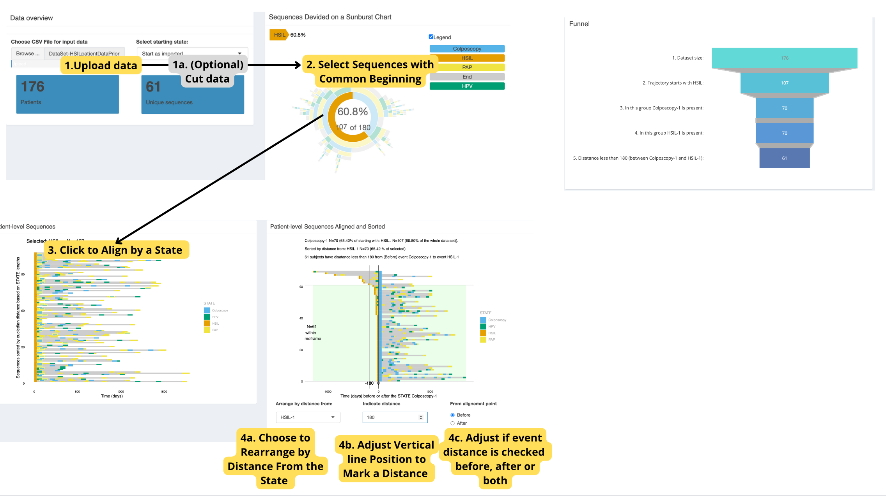

TrajectoryViz
a08_TrajectoryViz.RmdIntroduction
TrajectoryViz
is a R package to visualize event sequences as treatment trajectories,
it uses the Cohort2Trajectory output which was described in
the last article.

TrajectoryViz
Usage
To run the TrajectoryViz graphical interface you can use
the following wrapper.
# Initiate database connection & load data
pathToResults <- "./inst/example"
db <- DBI::dbConnect(duckdb::duckdb(), dbdir = CDMConnector::eunomia_dir("GiBleed"))
cdm <- CDMConnector::cdm_from_con(db , cdm_name = "eunomia", cdm_schema = "main", write_schema = "main")
data <- readRDS("./inst/example/example.rds")
# Import raw data for trajectory creation
data <- CohortContrast::createC2TInput(data, cdm)
# Create trajectories
trajectories <- CohortContrast::C2TCaller(
data,
pathToResults
)
# Run TrajectoryViz GUI
CohortContrast::runTrajectoryViz(trajectories)